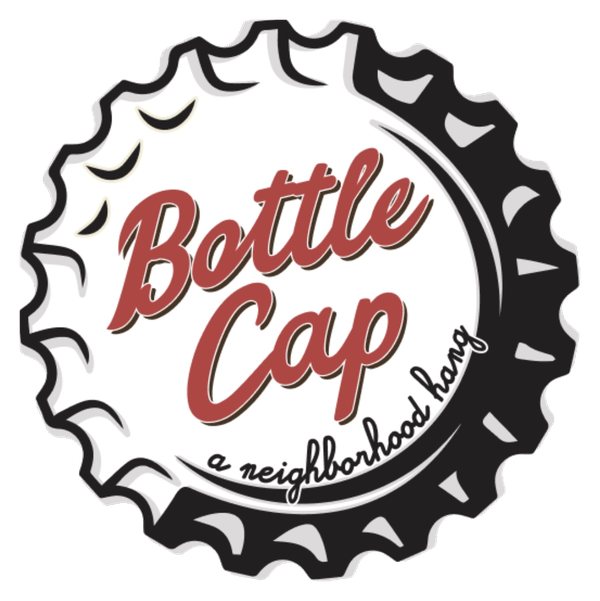
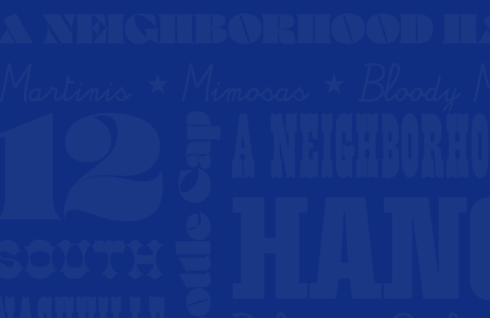

What is Bottle Cap?
Bottle Cap is a restaurant and bar in Nashville's 12 South neighborhood, serving craft cocktails, cold drafts, and pub food favorites in a lively space built for game days and easy nights out.
The Challenge

Bottle Cap's website was years out of date. The menu was a fuzzy screenshot of a PDF. The events page was a wall of type with no hierarchy. The location page gave an address with no link to a map. Navigation changed from page to page, and the things a guest actually comes for, hours, a menu, what's on tonight, were hard to find or missing.
Underneath the usability problems was a brand problem. The client had a competitor's site in mind and wanted to copy it.
The Solution
A five-page site with one navigation, a page each for menu, specials, events, and location, and a brand direction that belonged to Bottle Cap instead of a competitor. I ran research, set the direction, and drew the wireframes, then handed off to a contracted UI designer.
The Outcome
The site launched at the end of my internship with every structural problem from discovery fixed: consistent navigation, a responsive menu, a mapped location, and a brand that holds across every page.
Discovery & Research
At the start I had a client and not much else. I didn't know what the Bottle Cap brand should be, what was failing on the existing site, or what people wanted from it.
Design problem: understand the business and the market it competes in before designing anything.

I worked with Element 47 to surface what Bottle Cap wanted, what they valued, and what frustrated them about the current site. Then I ran a competitive analysis of six other Nashville bars and pubs. I looked at their visual systems, their site structures, and the conventions they all shared.
The research also surfaced the problem I'd have to handle next: the client liked the look of one competitor and wanted to copy it.
Brand Direction & Client Advocacy
I understood the appeal. The client responded to that bar's energy and tone. But imitating another business's visual identity is bad for both businesses, and it would have handed Bottle Cap a borrowed identity instead of a brand.
Design problem: bring the client to an original direction without dismissing their instincts.

Instead of telling them copying a competitor was a bad idea, I used their own goals to reframe the conversation. They wanted to stand out in Nashville, build a regular crowd, and feel like "the local, cozy bar next door." So I presented other popular competitors, talked through the most desirable aspects of each, and we arrived at an original direction together. Grounding the pitch in their goals made the redirection a collaborative effort instead of a correction. That direction became the foundation for the whole redesign.
Wireframes & Handoff
With the direction approved, I had to turn it into a working site.
Design problem: fix the structure so a guest can find hours, a menu, and events in one try, then get a contractor to build it out without losing the direction.


I created wireframes in Figma that fixed the structure. Navigation stays the same on every page. The menu, specials, events, and location each got their own page instead of infinite scroll on one page. After Element 47 gave final approval on the wireframes, I provided comprehensive brand guidance to the contracted UI designer during handoff, completing my time with Element 47.
What Shipped
The redesigned site launched after the end of my internship.
| Found in discovery | Shipped |
|---|---|
| Navigation changed from page to page | One navigation across all five pages |
| Menu was a screenshot of a text PDF | Responsive menu with photos on its own page |
| Location was an address with no link | Location page with a Google Map embed |
| Client wanted to copy a competitor | An original direction |


Bottle Cap transformed from a dated site into a site that captures the welcoming, "local, cozy bar next door" atmosphere the client envisioned, making it effortless for guests to find the information they need. The live site stands as the directly contributed work from 2024.